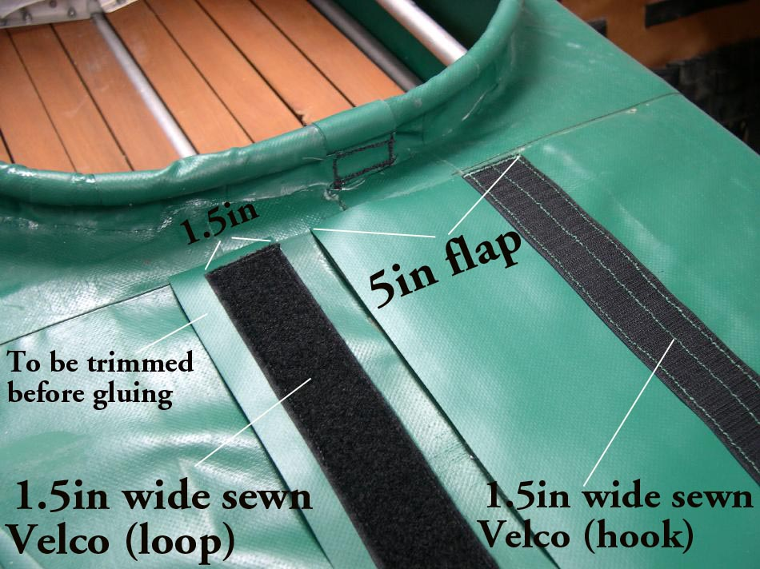

| Velcro Flap Deck Closure (3 of 5) | Menu Previous Page Next Page |
|

Velcro is sewn to the 1.5in and 5in deck flaps with the same technique used earlier for sewing the zipper to it's 5in PVC flap. The outline of the zipper flap will be used to allign and glue the Velcro deck flaps to the deck. In this pic, the smaller Velcro deck flap has been sewn, but has not yet been trimmed to match the width of the Velcro ( 1.5in)
|
|